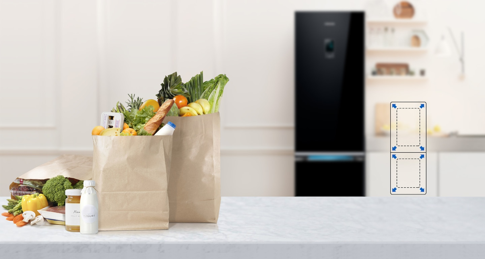
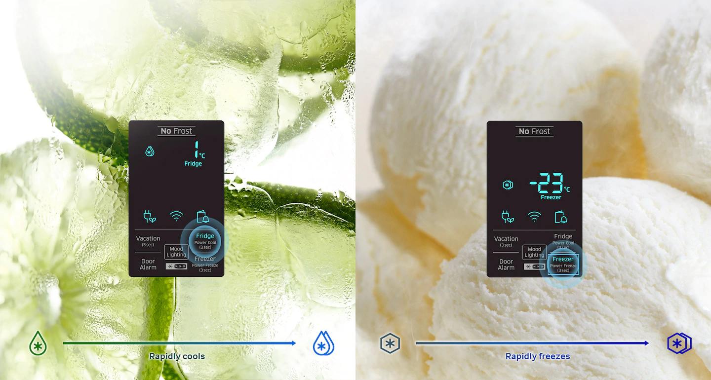
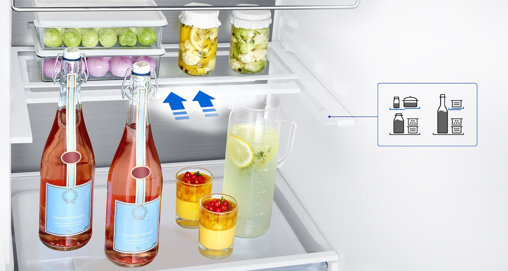
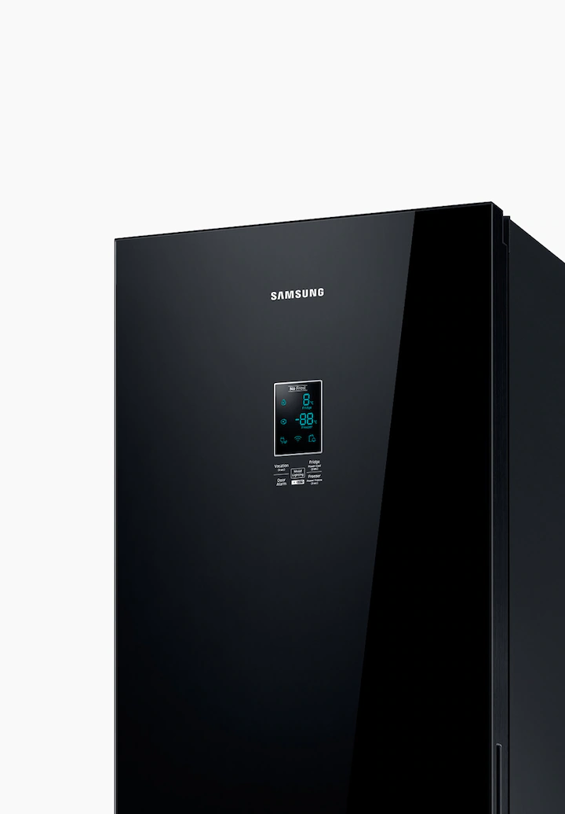

Объем больше, размер тот же
Увеличенный объем рабочих камер при тех же внешних габаритах. У вас достаточно места для хранения запасов продуктов на целую неделю, однако теперь все покупки легче разместить и быстрее найти.

Работает разумно, служит долго
Цифровой инверторный компрессор автоматически регулирует скорость работы электромотора в зависимости от выбора одного из семи уровней мощности охлаждения. В результате холодильник потребляет меньше электроэнергии, работает тихо и служит долго.

Мясо и рыба всегда сохраняют "первую свежесть"
Зона Fresh Zone - это выдвижной ящик, в котором обеспечены лучшие условия для хранения мяса и рыбы. Теперь мясо и рыба хранятся при оптимальной температуры, благодаря чему они сохраняют свежесть и свои первоначальные пищевые свойства.

Быстрое охлаждение и нагрев
Быстрое и интенсивное охлаждение. Прикосновение к одной кнопки активирует функцию Power Cool (быстрое охлаждение), которая быстро охлаждает продукты и напитки, а функция Power Freeze (Быстрое замораживание) - это лучший выбор для замораживания и приготовления кусочков льда.

Легко разместить высокие и объемные упаковки
Выдвижная и сложная полка обеспечивает гибкость при хранении продуктов. Если вам нужно разместить в холодильнике объемные упаковки с продуктами, например, бутылки или большие упаковки, эту полку можно легко выдвинуть наружу и сложить пополам, освободив дополнительное пространство.

Регулируемое положение дверных карманов
4 дверных съемных контейнеры можно легко приспособить для хранения емкостей самых разных размеров. Вы можете отрегулировать положение дверных карманов, чтобы в них поместились бутыли разного размера и другие упаковки с продуктами.

LED подсветка
LED подсветка обеспечивает приятное для глаз «теплое» освещения в кухне и одновременно ярко подсвечивает содержимое холодильника, чтобы вы могли легко и быстро найти нужный продукт.

Эффективное охлаждение каждого уголка рабочей камеры
Технология All-around Cooling позволяет равномерно охлаждать каждый уголок рабочей камеры. Охлажденный воздух проходит через множество вентиляционных отверстий, имеющих выходы на каждую полку, благодаря чему в холодильнике поддерживается постоянная температура и продукты всегда остаются свежими.

Забудьте о изморози и накоплении льда
Технология No Frost позволяет поддерживать во всех уголках рабочих камер постоянную температуру, предотвращая образование изморози и льда. Кроме того, эта технология обеспечивает ускоренное охлаждение продуктов, способствует увеличению срока службы холодильника и экономии электроэнергии, расходуемой на размораживание холодильника.
Дверца из премиального стекла
Премиальный дизайн стеклянных дверей служит элементом декора, предоставляя кухни современного стиля.
